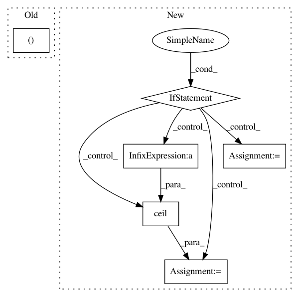

7b03c4edfe749b3de26c71631d63f9269d7c7268,tensorforce/core/layers/convolutions.py,Conv2d,get_output_spec,#Conv2d#Any#,135
Before Change
return dict(type="float", shape=(0, 0, 0))
def get_output_spec(self, input_spec):
if self.stride != (1, 1, 1, 1):
raise NotImplementedError
elif self.squeeze:
input_spec["shape"] = input_spec["shape"][:-1]
After Change
return dict(type="float", shape=(0, 0, 0))
def get_output_spec(self, input_spec):
if self.padding == "SAME":
shape = (
ceil(input_spec["shape"][0] / self.stride[1]),
ceil(input_spec["shape"][1] / self.stride[2])
)
elif self.padding == "VALID":
shape = (
ceil((input_spec["shape"][0] - (self.window[1] - 1)) / self.stride[1]),
ceil((input_spec["shape"][1] - (self.window[2] - 1)) / self.stride[2])
)
if self.squeeze:
input_spec["shape"] = shape
else:
input_spec["shape"] = shape + (self.size,)
In pattern: SUPERPATTERN
Frequency: 3
Non-data size: 6
Instances
Project Name: reinforceio/tensorforce
Commit Name: 7b03c4edfe749b3de26c71631d63f9269d7c7268
Time: 2019-02-11
Author: alexkuhnle@t-online.de
File Name: tensorforce/core/layers/convolutions.py
Class Name: Conv2d
Method Name: get_output_spec
Project Name: githubharald/SimpleHTR
Commit Name: 10781ce4f0b85b5468ed8d8d485412d8cb307ae6
Time: 2021-01-22
Author: harald@newlaptop.com
File Name: src/DataLoaderIAM.py
Class Name: DataLoaderIAM
Method Name: getIteratorInfo
Project Name: analysiscenter/batchflow
Commit Name: 29f852d88e32f616437a6ca5cf6f886680523ede
Time: 2019-10-31
Author: 7520522+a-arefina@users.noreply.github.com
File Name: batchflow/utils.py
Class Name:
Method Name: plot_results_by_config